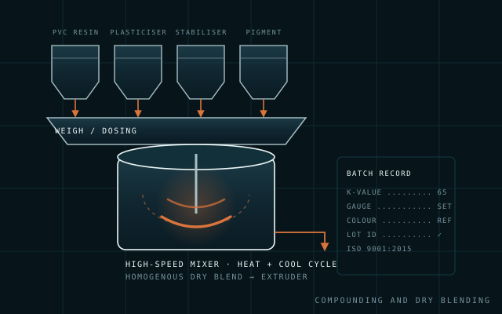
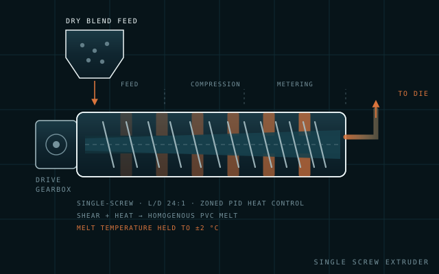
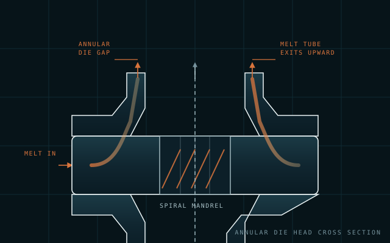
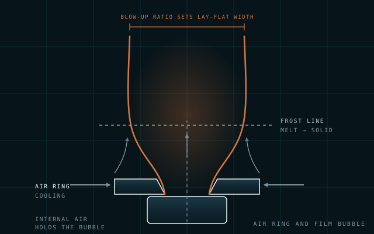
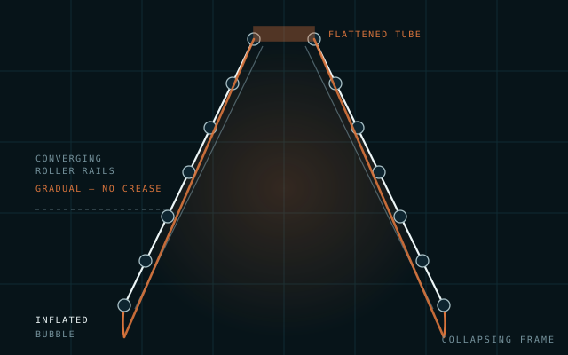
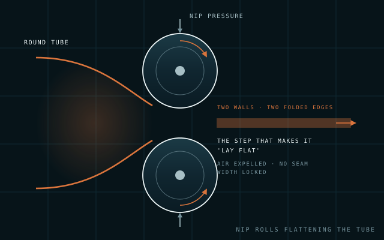
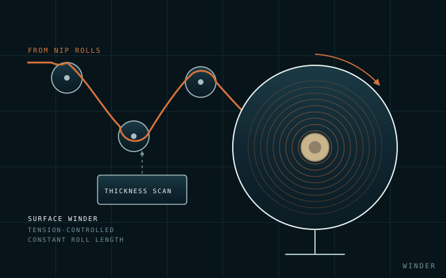
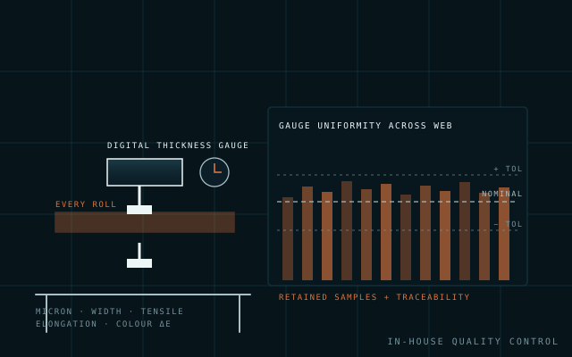

01Manufacturing
How a dry blend
becomes a roll.
Blown film extrusion is one of the few industrial processes you can watch from beginning to end and understand completely. Here is our line, stage by stage — including the settings that actually decide whether the film you receive performs.
Scroll the stages below — the schematic follows.
Compounding
PVC resin, plasticiser, stabiliser and pigment are weighed to a batch recipe and blended hot, then cooled, until the mix is genuinely homogenous.
Everything downstream inherits this step. A blend that varies by half a percent shows up 400 metres later as a gauge band or a colour drift, and no amount of control at the die will pull it back. Recipes are held against a batch record and pigment is matched to a retained reference chip.

Extrusion
A single screw carries the blend down a heated barrel through feed, compression and metering zones, turning it into a uniform melt.
PVC is heat-sensitive — run it too hot or hold it too long and it degrades. The barrel is zoned and PID-controlled so melt temperature is held tight, and screw speed is matched to output rather than pushed for its own sake. Steady melt is what makes the bubble stand still.

The annular die
The melt turns through ninety degrees and is split around a spiral mandrel, rejoining as a single seamless tube that exits upward through a ring-shaped gap.
This is where the tube becomes a tube. The spiral mandrel exists to erase the weld lines left by splitting the flow — done properly there is no seam anywhere in the finished product, which is exactly why lay flat tubing outperforms a side-welded bag under load.

Air ring and bubble
Internal air inflates the soft tube into a bubble while an air ring cools it from outside. Where it stops expanding — the frost line — the film has set.
Blow-up ratio decides the finished lay-flat width, and the height of the frost line decides how the film's strength is distributed between machine and cross direction. These two settings are the difference between film that tears and film that stretches. They are logged per product, not rediscovered every run.

Collapsing frame
Converging rails carry the round bubble gradually inward until it is nearly flat, on rollers rather than dragging over a surface.
The whole art here is patience. Collapse too sharply and you crease the folded edges permanently — a defect the customer finds when the pack splits along the fold. Length, angle and roller spacing are set so the film arrives at the nip already almost flat.

Nip rolls
Two driven rolls close on the tube, expel the last of the air and lock the width. This is the step the product is named for.
What leaves the nip is lay flat tubing: two walls, two folded edges, no seam, and a width that will not wander. Nip pressure and line speed also set the tension the whole line runs at, so this pair of rolls quietly governs everything behind it.

Gauge scan
The web passes a thickness scan on its way to the winder, so a drift is caught while it is still correctable rather than after the roll is finished.
Uniformity across the web matters more than the average. A roll that averages 100 micron but swings between 80 and 120 will seal inconsistently on your line, and you will feel it as rejects rather than read it as a number.

Winding and despatch
Film is wound to length under controlled tension, sampled, documented, poly-wrapped and palletised against the order.
Tension control is why a roll arrives round and unwinds cleanly instead of telescoping in transit. Every roll is sampled before it ships, samples are retained against the batch, and the paperwork goes out with the goods rather than after them.

02The plant
Where it happens.
Everything above runs under one roof in Vasai East, outside Mumbai — compounding, extrusion, quality control and despatch. Nothing is subcontracted, which is why a change request lands with the people who will actually make it.
Established
2007
Sole proprietorship, incorporated 2019
Plant
Vasai East
Tirupati Industrial Park, Palghar
Team
51–100
Production, QC and despatch
System
ISO 9001:2015
Certified quality management
Visit us
Buyers placing volume orders are welcome at the plant. We will walk you down the line described on this page, show you the batch records behind your grade, and put physical samples in your hand before you commit to a run. Arrange a visit
→Next step
Tell us what
you need to pack.
Tell us what you are wrapping, how you seal it and what it has to survive. We will come back with a gauge, a width and a colour — and a price against your volume.
Typical reply within one working day · +91 97860 50000